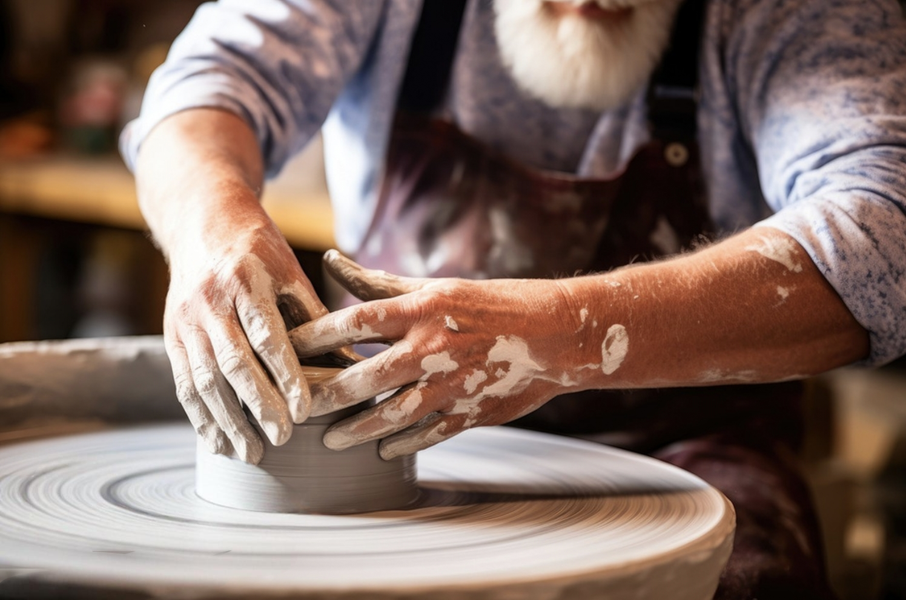
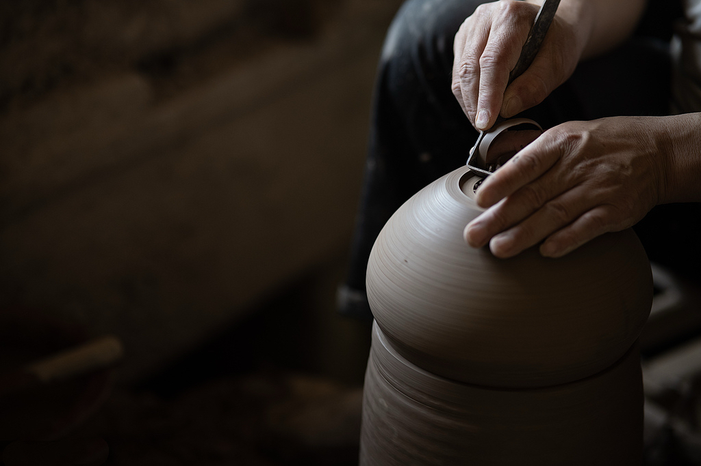
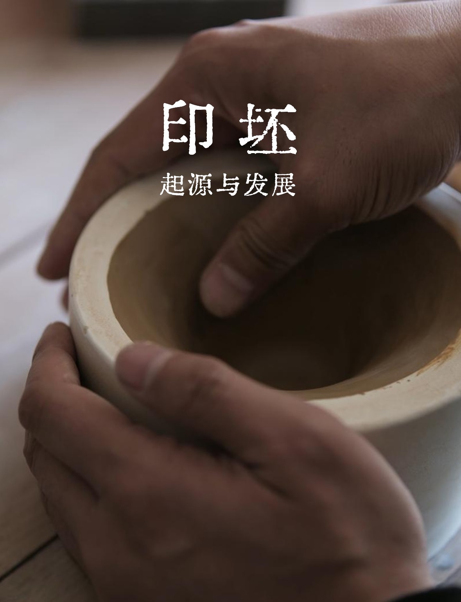
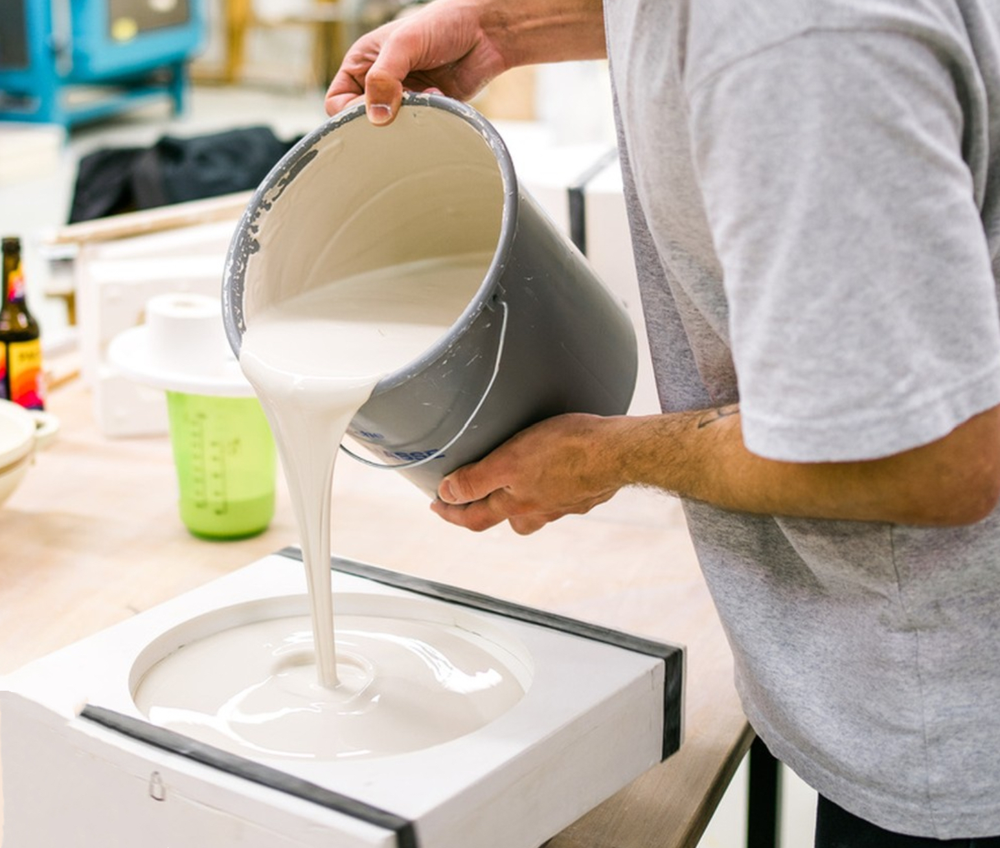
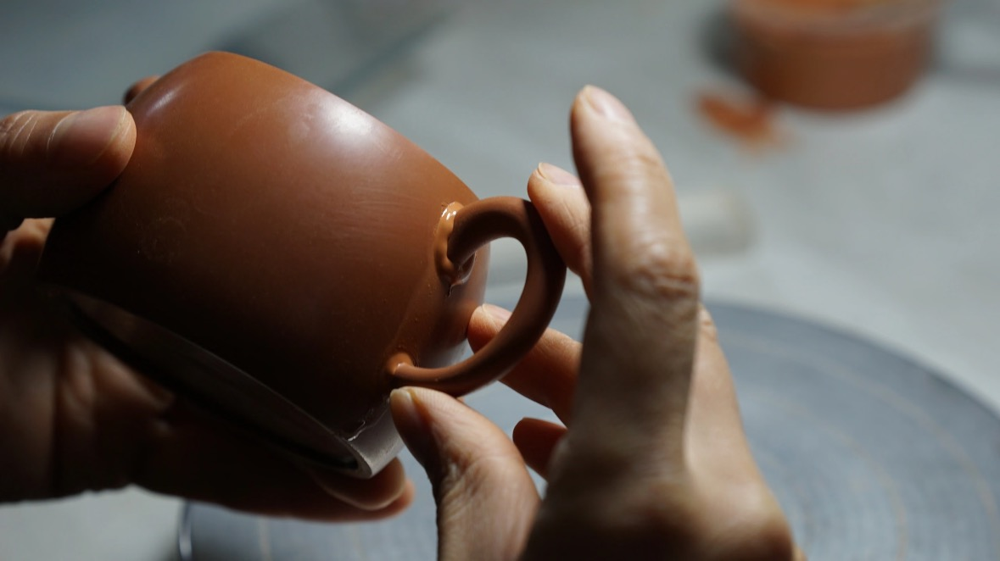

成型工艺概述
成型是青瓷制作的关键环节，是将练好的瓷泥转化为具有一定形状和结构的坯体的过程。龙泉青瓷的成型工艺主要包括拉坯、利坯、印坯、注浆、雕塑等多种技法，每种技法都有其独特的特点和适用范围。
传统成型工艺高度依赖匠人的经验和手感，一件优秀的青瓷作品往往需要数年甚至数十年的技艺积累。现代青瓷制作在保留传统技艺精髓的基础上，也引入了部分机械化辅助设备，提高了生产效率和精度。
"轮盘一转，巧手翻飞，泥土在匠人手中仿佛有了生命，逐渐展现出优美的形态。"这是对青瓷拉坯工艺最生动的描述。
主要成型技法
拉坯成型
在旋转的轮盘上，匠人用手将瓷泥拉制成各种圆形器物，如碗、盘、瓶等，是最具代表性的传统成型技法。
利坯修整
对拉制后的坯体进行精细修整，调整厚度，修整外形，是保证器物规整度和美观度的关键工序。
印坯成型
将瓷泥压入模具中成型，适用于制作形状复杂或需要批量生产的器物，能保证造型的一致性。
注浆成型
将泥浆注入石膏模具，利用石膏的吸水性使泥浆在模具内壁形成坯体，适用于复杂形状器物。
雕塑成型

手工雕塑各种人物、动物等立体造型，是最具艺术性和创造性的成型技法，对匠人要求极高。
粘接成型
将多个简单坯体部件粘接组合成复杂器物，如瓶耳、壶嘴等部件的安装多采用此方法。
工艺要点
- 坯体厚度控制：均匀的厚度是保证烧制过程中受热均匀的关键
- 含水率控制：成型时含水率一般在20%-25%，过高易变形，过低可塑性差
- 干燥控制：成型后的坯体需自然阴干，避免阳光直射和风吹，防止开裂
- 修坯精度：表面平整度和尺寸精度直接影响最终产品质量和美观度
历史传承
龙泉青瓷的成型工艺历史悠久，早在宋代就已形成了完整的体系。宋代龙泉窑的匠人们创造了许多精美绝伦的器型，如梅瓶、玉壶春瓶、琮式瓶等经典造型，至今仍被广泛沿用。
传统拉坯使用的是木制脚踏轮盘，匠人通过脚蹬带动轮盘旋转，双手同时进行拉坯操作，需要高度的协调能力。现代则多采用电动轮盘，大大降低了体力消耗，提高了转速稳定性。